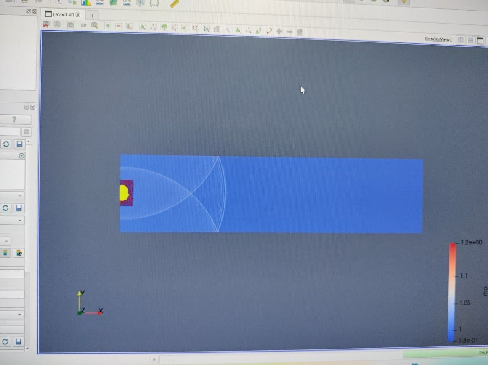
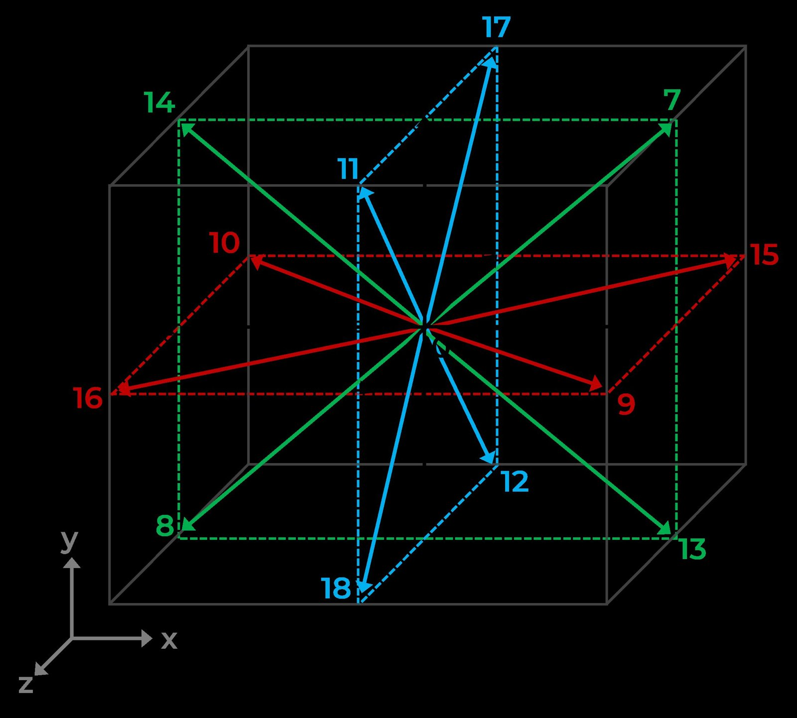
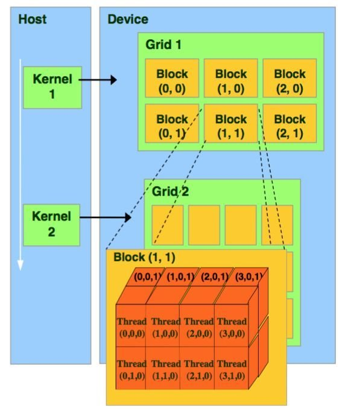
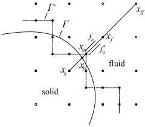
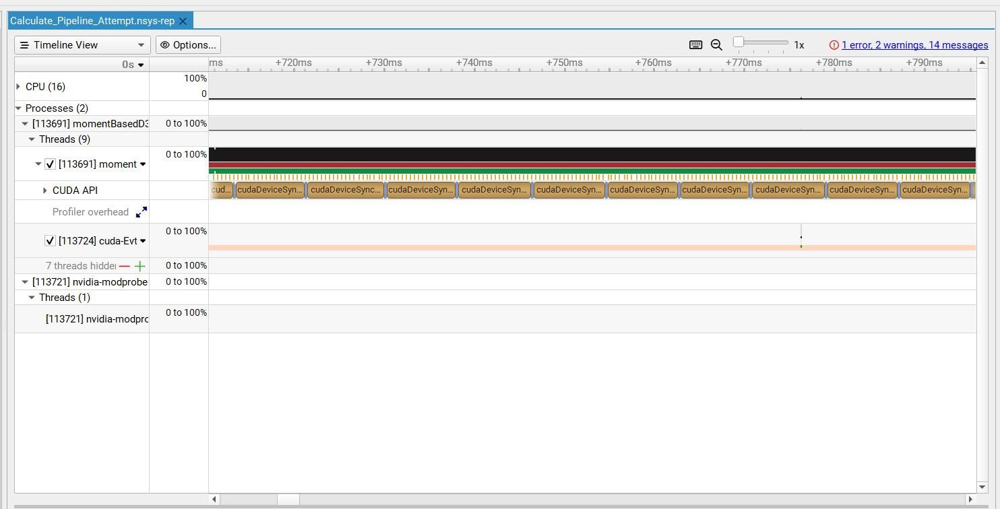
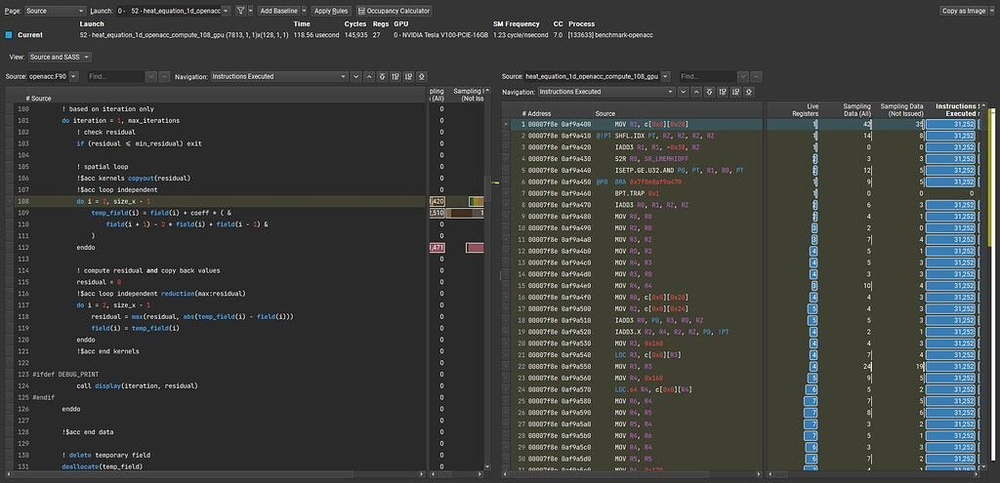
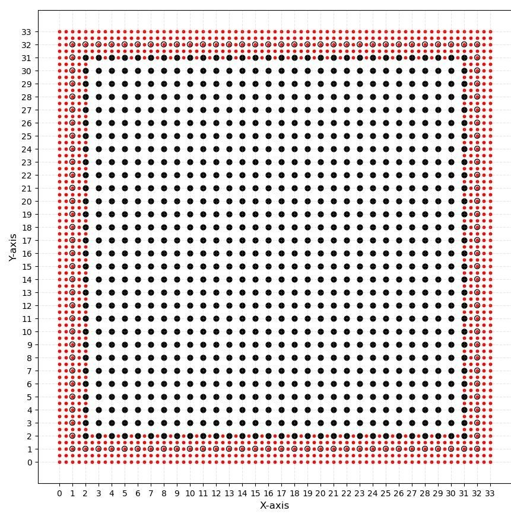

Two fluids at once
Oil and seawater have to be resolved together, because dispersion depends on how the two interact rather than on either fluid alone.
Petrobras needed to predict where spilled oil goes at sea. I profiled and reworked the lab's lattice Boltzmann GPU solver behind that effort, removing hidden compute and memory bottlenecks and validating every speedup against the simulation's accuracy limits.
Mechanical Engineering Intern · Petrobras (the Brazilian national energy company) · Geoenergia Lab, UDESC · Jun–Aug 2025 · Florianópolis, Brazil

Petrobras produces oil offshore, and a spill at sea is both an environmental disaster and a long-running liability. The lab's goal was a simulation that could cover a large section of ocean, resolve oil and seawater together, and predict how spilled oil would travel and disperse: accurately enough to be trusted, and fast enough to still be useful while a response is underway.
Oil and seawater have to be resolved together, because dispersion depends on how the two interact rather than on either fluid alone.
A useful prediction covers a large stretch of open water, so the cost per lattice site decides whether the model is practical at all.
The premise was that a GPU-parallelized lattice Boltzmann solver could reach a better speed-to-accuracy point than a traditional Navier-Stokes solver. Whether the GPU side could be made fast enough was the open question I worked on.
A spill model that resolves the right physics but takes too long to run cannot guide a response. Every factor of speed recovered on the solver widens the area that can be simulated, or shortens the wait for an answer, which is what would let Petrobras direct containment before the oil spreads further and limit both the environmental damage and the liability that follows it.
There were two problems, and only one of them was obvious. The lab's higher-order physics kernels ran roughly 10× slower than the hardware should have allowed. Underneath that sat a structural one: the solver's data was grouped so that values the next step needed sat in the same blocks as values it did not, so entire sections of the lattice were shuttled between GPU and CPU every iteration whether or not anything in them was required. I owned profiling, the targeted optimizations, the grid-generation tooling, and the handoff back to the lab.
The D3Q19 lattice solver parallelizes cleanly, since collision and streaming update independent sites. The hardware was not the limit, so something in how the code used it was.
Needed and unneeded data shared the same groupings, so transfers moved far more than the next step actually consumed. The cost was paid every iteration.
Precision and grid changes were checked against established simulation tolerances at every step, so nothing could be bought with a worse answer.



This is the part that decides whether lattice Boltzmann beats a traditional solver at all. A Navier-Stokes solver spends its time working through coupled differential equations, so its cost is dominated by arithmetic. Lattice Boltzmann inverts that: each site does simple local collision math that a GPU thread finishes almost immediately, and then streaming moves those populations to neighbouring sites. The math is cheap and the movement is not, so on a GPU the solver is bound by memory bandwidth rather than floating-point throughput. Almost every optimization on this project is therefore a decision about where data lives and how it travels.
Per thread. Effectively instant, and only a handful of values. Ask for too many and they spill.
Per block of threads, on chip, near register speed. Small fixed budget per multiprocessor, so spending less of it lets more blocks run at once.
Cached and broadcast to every thread at once. The right home for lattice weights and fixed coefficients that never change.
Holds the entire lattice. Hundreds of cycles per access, and only efficient when a warp reads consecutive addresses.
Per thread, but physically sitting in global memory. Where spilled registers land. Reads as free and is not.
The largest pool and the worst latency. Crossing it every timestep dominates runtime no matter how good the kernels are.
Most of what I changed was not the math. It was deciding which arrays justified a slot in shared memory and which belonged in global, and at what point in the timestep each one actually needed to be there. Keep working data in the fastest tier that can hold it, arrange it so a warp reads it in one transaction, and stop moving anything across the slow links that the next step does not need. It is also why the precision change mattered: FP64 to FP32 halves the bytes behind every lattice population, which on a memory-bound solver buys bandwidth rather than just faster arithmetic.
Manual timers and refactoring did not explain the slowdown. Hardware-level profiling did: Nsight Compute exposed lingering double-precision FMA instructions in the hottest loops and Nsight Systems showed where runtime accumulated.
Locate expensive kernels and distinguish compute time from memory stalls.
Use source-correlated metrics to identify FP64 instructions and access patterns.
Re-run benchmark cases and confirm the solution remains inside tolerance.


Removed unnecessary double-precision work from hot loops while checking error against simulation tolerances.
Restructured thread-to-data mapping to reduce long scoreboard stalls and improve warp efficiency by 60%.
Cut peak shared-memory use from 56 KB to 36 KB, allowing more active work on the same hardware.
The precision and kernel changes produced the largest throughput improvement, with higher-order kernels improving by roughly 500% while remaining inside the lab's validation limits.
Boundary instability required a geometry change, not another low-level optimization. I generated multiresolution interfaces with a fine lattice near boundaries and a coarser interior.

The grid tool increased peak simulated Reynolds number by 33% without reducing throughput. I also delivered ParaView scripts, an Nsight manual, and a training video so the lab could repeat the workflow.